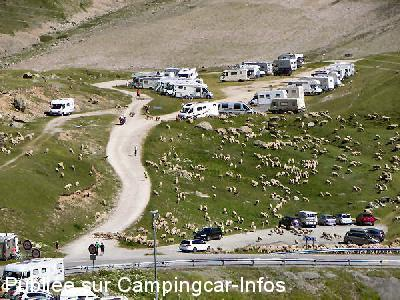
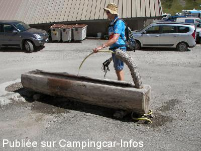
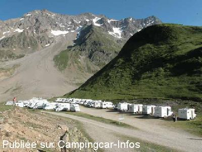
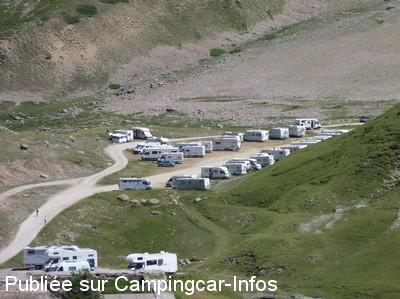

APN = Parking toléré jour/nuit de :
LA GRAVE Col du Lautaret
(N° 532)
Accès/adresse :
D1091
Col du Lautaret
05320 LA GRAVE
Col du Lautaret
05320 LA GRAVE
Latitude : (Nord) 45.03271° Décimaux ou 45° 1′ 57′′
Longitude : (Est) 6.40726° Décimaux ou 6° 24′ 26′′
Tarif : Gratuit
Services :

Restaurants
Informations
Attention, cet emplacement se situe en lisière du parc national des écrins soumis à règlementation.
Pas de chien, même tenu en laisse : pour la tranquillité des animaux sauvages et domestiques. Les exceptions concernent les chiens de travail (chien d'avalanche, de conduite et de défense des troupeaux, chien d'aveugle dans le cadre de leur activité).
Pour information, les infractions sont sanctionnées par des amendes variant de 11 à 135 €
Autres informations :
40 emplacements empierrés, calmes en retrait de la route
Site magnifique
Départ de randonnées pédestres

Le 30/07/2014 par michelene73

Le 30/07/2014 par michelene73

Le 21/07/2010 par Jean Pierre 51

Le 18/07/2010 par Xtian74
de
michelene73
le 30/07/2014 :
Au col une fontaine d'eau coule en permanence et des WC sont accessibles. Restaurants et dépôt de pain permettent de ne pas tomber en panne !
Au col une fontaine d'eau coule en permanence et des WC sont accessibles. Restaurants et dépôt de pain permettent de ne pas tomber en panne !
de
RG77
le 17/11/2013 :
§ Attention, cet emplacement se situe en lisière du parc national des écrins soumis à règlementation.
Pas de chien, même tenu en laisse : pour la tranquillité des animaux sauvages et domestiques. Les exceptions concernent les chiens de travail (chien d'avalanche, de conduite et de défense des troupeaux, chien d'aveugle dans le cadre de leur activité).
Pour information, les infractions sont sanctionnées par des amendes variant de 11 à 135 euros.
§ Attention, cet emplacement se situe en lisière du parc national des écrins soumis à règlementation.
Pas de chien, même tenu en laisse : pour la tranquillité des animaux sauvages et domestiques. Les exceptions concernent les chiens de travail (chien d'avalanche, de conduite et de défense des troupeaux, chien d'aveugle dans le cadre de leur activité).
Pour information, les infractions sont sanctionnées par des amendes variant de 11 à 135 euros.
de
Pierrot 67
le 11/10/2013 :
Nous avons passé une nuit le 2 octobre; 5 CC sur ce "parking" et aucun souci.
Nous avons passé une nuit le 2 octobre; 5 CC sur ce "parking" et aucun souci.
de
clau
le 17/08/2013 :
Passé le 9/08/2013: splendide panorama au lever du soleil avec le bonjour des marmottes. Autonomie nécessaire mais les portables fonctionnent. Parking un peu anarchique, mais tranquille.
Passé le 9/08/2013: splendide panorama au lever du soleil avec le bonjour des marmottes. Autonomie nécessaire mais les portables fonctionnent. Parking un peu anarchique, mais tranquille.
de
FRANBER
le 06/10/2012 :
superbe paysage il vaut mieux prévoir l'autonomie totale pour rester sur place.Aire non officielle en retrait de la route (100m derrière l'hotel)
pas de télephone portable sur place ni de TNT
superbe paysage il vaut mieux prévoir l'autonomie totale pour rester sur place.Aire non officielle en retrait de la route (100m derrière l'hotel)
pas de télephone portable sur place ni de TNT
de
Zoulou
le 30/06/2011 :
Robinet d'eau potable sur le parking de l'hotel-restaurant. Accès gratuit. Pour les eaux noires et grises descendre à Casset direction Briançon, une aire de vidange est installée juste avant le camping, ou alors les aires de Serre-Chevalier.
Robinet d'eau potable sur le parking de l'hotel-restaurant. Accès gratuit. Pour les eaux noires et grises descendre à Casset direction Briançon, une aire de vidange est installée juste avant le camping, ou alors les aires de Serre-Chevalier.